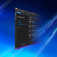

أدوات احترافية (19)
Advanced IP Scannerماسح شبكات سريع وسهل الاستخدام، مصمم لتحليل الشبكات المحلية وعرض معلومات الأجهزة المتصلة.Angry IP Scannerماسح شبكات مفتوح المصدر ومتعدد المنصات، يفحص عناوين IP والمنافذ ويعرض معلومات الاتصال بالشCinebench R23أداة قياس أداء لمقارنة قدرة المعالج على التصيير بين الأجهزة. CPU-Zأداة لمراقبة النظام وتشخيصه في ويندوز، تعرض معلومات مفصلة عن مكونات الجهاز مثل المعالج والDisplay Driver Uninstallerأداة لإزالة تعريفات بطاقات الرسوميات من NVIDIA وAMD وIntel بالكامل، ومفيدة لحل مشكلات التعGPU-Zيعرض معلومات مفصلة عن بطاقة الرسوميات والمعالج الرسومي.gsudoمكافئ لأمر sudo في ويندوز، يتيح تشغيل الأوامر بصلاحيات المسؤول مباشرة في نافذة الطرفية الحHWiNFOيوفر معلومات شاملة عن العتاد وتشخيصه في ويندوز.HWMonitorبرنامج لمراقبة العتاد يقرأ أهم مستشعرات صحة الجهاز.
CPU-Zأداة لمراقبة النظام وتشخيصه في ويندوز، تعرض معلومات مفصلة عن مكونات الجهاز مثل المعالج والDisplay Driver Uninstallerأداة لإزالة تعريفات بطاقات الرسوميات من NVIDIA وAMD وIntel بالكامل، ومفيدة لحل مشكلات التعGPU-Zيعرض معلومات مفصلة عن بطاقة الرسوميات والمعالج الرسومي.gsudoمكافئ لأمر sudo في ويندوز، يتيح تشغيل الأوامر بصلاحيات المسؤول مباشرة في نافذة الطرفية الحHWiNFOيوفر معلومات شاملة عن العتاد وتشخيصه في ويندوز.HWMonitorبرنامج لمراقبة العتاد يقرأ أهم مستشعرات صحة الجهاز. Mullvad VPNبرنامج العميل لخدمة Mullvad VPN.Nmapأداة مفتوحة المصدر لاستكشاف الشبكات والتدقيق الأمني، تكتشف الأجهزة على الشبكة وتعرض معلوماOpenVPN Connectعميل VPN يتيح الاتصال الآمن بخادم VPN عبر اتصال مشفّر لحماية خصوصيتك على الإنترنت.Proton VPNخدمة VPN لا تحتفظ بالسجلات، تحمي خصوصيتك بميزات مثل Secure Core وTor عبر VPN.PuTTYمحاكي طرفية مجاني ومفتوح المصدر ووحدة تحكم تسلسلية وأداة نقل ملفات عبر الشبكة، يدعم بروتوكSimplewallجدار حماية مجاني ومفتوح المصدر لويندوز، يتيح التحكم في حركة الشبكة الواردة والصادرة للتطبيVentoyأداة مفتوحة المصدر لإنشاء وحدات USB قابلة للإقلاع، تدعم وضع عدة ملفات ISO على وحدة واحدة، WinSCPعميل SFTP وFTP وSCP شهير ومفتوح المصدر لويندوز، يتيح نقل الملفات بأمان بين الجهاز المحلي وWireGuardبروتوكول VPN سريع وحديث، يهدف إلى أن يكون أبسط وأكفأ من بروتوكولات VPN الأخرى مع اتصالات آWiresharkمحلل بروتوكولات شبكة مفتوح المصدر وواسع الانتشار، يلتقط حركة الشبكة ويحللها لحظيًا ويقدم ر
Mullvad VPNبرنامج العميل لخدمة Mullvad VPN.Nmapأداة مفتوحة المصدر لاستكشاف الشبكات والتدقيق الأمني، تكتشف الأجهزة على الشبكة وتعرض معلوماOpenVPN Connectعميل VPN يتيح الاتصال الآمن بخادم VPN عبر اتصال مشفّر لحماية خصوصيتك على الإنترنت.Proton VPNخدمة VPN لا تحتفظ بالسجلات، تحمي خصوصيتك بميزات مثل Secure Core وTor عبر VPN.PuTTYمحاكي طرفية مجاني ومفتوح المصدر ووحدة تحكم تسلسلية وأداة نقل ملفات عبر الشبكة، يدعم بروتوكSimplewallجدار حماية مجاني ومفتوح المصدر لويندوز، يتيح التحكم في حركة الشبكة الواردة والصادرة للتطبيVentoyأداة مفتوحة المصدر لإنشاء وحدات USB قابلة للإقلاع، تدعم وضع عدة ملفات ISO على وحدة واحدة، WinSCPعميل SFTP وFTP وSCP شهير ومفتوح المصدر لويندوز، يتيح نقل الملفات بأمان بين الجهاز المحلي وWireGuardبروتوكول VPN سريع وحديث، يهدف إلى أن يكون أبسط وأكفأ من بروتوكولات VPN الأخرى مع اتصالات آWiresharkمحلل بروتوكولات شبكة مفتوح المصدر وواسع الانتشار، يلتقط حركة الشبكة ويحللها لحظيًا ويقدم ر
CPU-Zأداة لمراقبة النظام وتشخيصه في ويندوز، تعرض معلومات مفصلة عن مكونات الجهاز مثل المعالج والDisplay Driver Uninstallerأداة لإزالة تعريفات بطاقات الرسوميات من NVIDIA وAMD وIntel بالكامل، ومفيدة لحل مشكلات التعGPU-Zيعرض معلومات مفصلة عن بطاقة الرسوميات والمعالج الرسومي.gsudoمكافئ لأمر sudo في ويندوز، يتيح تشغيل الأوامر بصلاحيات المسؤول مباشرة في نافذة الطرفية الحHWiNFOيوفر معلومات شاملة عن العتاد وتشخيصه في ويندوز.HWMonitorبرنامج لمراقبة العتاد يقرأ أهم مستشعرات صحة الجهاز.Mullvad VPNبرنامج العميل لخدمة Mullvad VPN.Nmapأداة مفتوحة المصدر لاستكشاف الشبكات والتدقيق الأمني، تكتشف الأجهزة على الشبكة وتعرض معلوماOpenVPN Connectعميل VPN يتيح الاتصال الآمن بخادم VPN عبر اتصال مشفّر لحماية خصوصيتك على الإنترنت.Proton VPNخدمة VPN لا تحتفظ بالسجلات، تحمي خصوصيتك بميزات مثل Secure Core وTor عبر VPN.PuTTYمحاكي طرفية مجاني ومفتوح المصدر ووحدة تحكم تسلسلية وأداة نقل ملفات عبر الشبكة، يدعم بروتوكSimplewallجدار حماية مجاني ومفتوح المصدر لويندوز، يتيح التحكم في حركة الشبكة الواردة والصادرة للتطبيVentoyأداة مفتوحة المصدر لإنشاء وحدات USB قابلة للإقلاع، تدعم وضع عدة ملفات ISO على وحدة واحدة، WinSCPعميل SFTP وFTP وSCP شهير ومفتوح المصدر لويندوز، يتيح نقل الملفات بأمان بين الجهاز المحلي وWireGuardبروتوكول VPN سريع وحديث، يهدف إلى أن يكون أبسط وأكفأ من بروتوكولات VPN الأخرى مع اتصالات آWiresharkمحلل بروتوكولات شبكة مفتوح المصدر وواسع الانتشار، يلتقط حركة الشبكة ويحللها لحظيًا ويقدم رأدوات الاستضافة الذاتية (12)
 Jellyfin Media Playerتطبيق عميل لخادم الوسائط Jellyfin يتيح الوصول إلى مكتبة الوسائط الخاصة بك.Jellyfin Serverخادم وسائط مفتوح المصدر يتيح تنظيم مكتبة الوسائط وبثها.Kodi Media Centerتطبيق مركز وسائط مفتوح المصدر لتشغيل معظم ملفات الفيديو والموسيقى والبودكاست وغيرها من الوLocalSendبديل مفتوح المصدر ومتعدد المنصات لميزة AirDrop.Moonlight/GameStream Clientعميل يتيح بث ألعاب الكمبيوتر إلى أجهزة أخرى عبر شبكتك المحلية.NetBirdبديل مفتوح المصدر يشبه Tailscale ويمكن ربطه بخادم مستضاف ذاتيًا.Nextcloud Desktopعميل سطح المكتب الرسمي لمنصة Nextcloud لمزامنة الملفات ومشاركتها.Plex Desktopالواجهة الأمامية لخادم Plex Media Server على ويندوز.Plex Media Serverبرنامج خادم وسائط لتنظيم مكتبة الوسائط وبثها، يدعم صيغًا متعددة ويقدم ميزات واسعة.Sunshine/GameStream Serverخادم بث ألعاب يتيح لعب ألعاب الكمبيوتر عن بُعد على أجهزة أندرويد بتأخير منخفض.Syncthing (CLI / Web UI)أداة لامركزية لمزامنة الملفات بين الأجهزة مباشرة وبأمان دون خوادم سحابية، وتُدار عبر واجهةSyncTrayzorأداة في علبة النظام تغلّف Syncthing وتجعله يعمل كتطبيق ويندوز أصلي لإدارة مزامنة الملفات و
Jellyfin Media Playerتطبيق عميل لخادم الوسائط Jellyfin يتيح الوصول إلى مكتبة الوسائط الخاصة بك.Jellyfin Serverخادم وسائط مفتوح المصدر يتيح تنظيم مكتبة الوسائط وبثها.Kodi Media Centerتطبيق مركز وسائط مفتوح المصدر لتشغيل معظم ملفات الفيديو والموسيقى والبودكاست وغيرها من الوLocalSendبديل مفتوح المصدر ومتعدد المنصات لميزة AirDrop.Moonlight/GameStream Clientعميل يتيح بث ألعاب الكمبيوتر إلى أجهزة أخرى عبر شبكتك المحلية.NetBirdبديل مفتوح المصدر يشبه Tailscale ويمكن ربطه بخادم مستضاف ذاتيًا.Nextcloud Desktopعميل سطح المكتب الرسمي لمنصة Nextcloud لمزامنة الملفات ومشاركتها.Plex Desktopالواجهة الأمامية لخادم Plex Media Server على ويندوز.Plex Media Serverبرنامج خادم وسائط لتنظيم مكتبة الوسائط وبثها، يدعم صيغًا متعددة ويقدم ميزات واسعة.Sunshine/GameStream Serverخادم بث ألعاب يتيح لعب ألعاب الكمبيوتر عن بُعد على أجهزة أندرويد بتأخير منخفض.Syncthing (CLI / Web UI)أداة لامركزية لمزامنة الملفات بين الأجهزة مباشرة وبأمان دون خوادم سحابية، وتُدار عبر واجهةSyncTrayzorأداة في علبة النظام تغلّف Syncthing وتجعله يعمل كتطبيق ويندوز أصلي لإدارة مزامنة الملفات وأدوات الوسائط المتعددة (22)
AIMP (Music Player)مشغّل موسيقى غني بالميزات يدعم صيغ صوتية متعددة وقوائم التشغيل وواجهة قابلة للتخصيص.Audacityبرنامج مجاني ومفتوح المصدر لتحرير الصوت، معروف بقدراته القوية في التسجيل والتحرير.Blender (3D Graphics)حزمة قوية ومفتوحة المصدر للتصميم ثلاثي الأبعاد، تشمل أدوات النمذجة والنحت والتحريك والتصييCalibreمدير كتب إلكترونية قوي وسهل الاستخدام، يعرضها ويحوّل صيغها.EarTrumpet (Audio)تطبيق للتحكم بالصوت في ويندوز بواجهة بسيطة وسهلة لإدارة إعدادات الصوت.File Converterيحوّل الملفات ويضغطها من قائمة النقر الأيمن في مستكشف ويندوز.foobar2000 (Music Player)مشغّل موسيقى لويندوز قابل للتخصيص والتوسعة بدرجة كبيرة، معروف بتصميمه المرن وميزاته المتقدGIMP (Image Editor)محرر رسوميات نقطية متعدد الاستخدامات ومفتوح المصدر، يُستخدم لتنقيح الصور وتحريرها وتركيبهاHandBrakeأداة مفتوحة المصدر لتحويل الفيديو من أي صيغة تقريبًا إلى مجموعة من الترميزات المدعومة على ImageGlass (Image Viewer)عارض صور متعدد الاستخدامات يدعم صيغًا كثيرة ويركّز على البساطة والسرعة.IrfanViewعارض ومحرر صور خفيف وسريع ومجاني، يدعم صيغًا متعددة والمعالجة الجماعية وإضافات قوية.iTunesتطبيق من Apple لتشغيل الوسائط وإدارة مكتبتها والاستماع إلى الإذاعات عبر الإنترنت.K-Lite Codec Standardمجموعة من ترميزات الصوت والفيديو والأدوات المرتبطة بها، توفر المكونات الأساسية لتشغيل الوسMedia Player Classic - Home Cinemaمشغّل فيديو وصوت مجاني ومفتوح المصدر لويندوز، مبني على مشروع Guliverkli الأصلي مع ميزات إضmpc-qtمشغّل وسائط بواجهة Qt مستوحى من Media Player Classic.mpvمشغّل وسائط مجاني ومفتوح المصدر ومتعدد المنصات، يدعم مجموعة واسعة من صيغ الوسائط والترميزاnomacsعارض صور مجاني ومفتوح المصدر ومتعدد المنصات، يعرض جميع صيغ الصور الشائعة بما فيها صور RAW Notepad++محرر أكواد مجاني ومفتوح المصدر وبديل للمفكرة، يدعم لغات برمجة متعددة.OBS Studioبرنامج مجاني ومفتوح المصدر لتسجيل الفيديو والبث المباشر، يدعم التقاط الصوت والصورة ومزجها Paint.NETبرنامج مجاني لتحرير الصور في ويندوز بواجهة سهلة ومجموعة واسعة من أدوات التحرير القوية.ShareX (Screenshots)أداة مجانية ومفتوحة المصدر لالتقاط الشاشة ومشاركة الملفات، تدعم طرق التقاط متعددة وتوفر ميVLC (Video Player)مشغّل وسائط مجاني ومفتوح المصدر يدعم مجموعة واسعة من صيغ الصوت والفيديو، ومعروف بتعدد استخ
أدوات مايكروسوفت (18)
 .NET Desktop Runtime 10بيئة تشغيل مطلوبة لتشغيل التطبيقات المطورة بـ .NET 10.
.NET Desktop Runtime 10بيئة تشغيل مطلوبة لتشغيل التطبيقات المطورة بـ .NET 10. .NET Desktop Runtime 6بيئة تشغيل مطلوبة لتشغيل التطبيقات المطورة بـ .NET 6..NET Desktop Runtime 8بيئة تشغيل مطلوبة لتشغيل التطبيقات المطورة بـ .NET 8.
.NET Desktop Runtime 6بيئة تشغيل مطلوبة لتشغيل التطبيقات المطورة بـ .NET 6..NET Desktop Runtime 8بيئة تشغيل مطلوبة لتشغيل التطبيقات المطورة بـ .NET 8. .NET Desktop Runtime 9بيئة تشغيل مطلوبة لتشغيل التطبيقات المطورة بـ .NET 9.
.NET Desktop Runtime 9بيئة تشغيل مطلوبة لتشغيل التطبيقات المطورة بـ .NET 9. Autorunsأداة تعرض البرامج المضبوطة للعمل عند إقلاع النظام أو تسجيل الدخول.
Autorunsأداة تعرض البرامج المضبوطة للعمل عند إقلاع النظام أو تسجيل الدخول.
DISMToolsواجهة رسومية سريعة وقابلة للتخصيص لأداة DISM، تدعم صور ويندوز من ويندوز 7 فما بعد، وتتعاملNTLiteيدمج التحديثات والتعريفات، ويؤتمت إعداد ويندوز والتطبيقات، ويسرّع عملية نشر ويندوز مع حفظ NuGetمدير حزم لإطار .NET يتيح للمطورين إدارة المكتبات ومشاركتها في تطبيقاتهم. OneDriveخدمة تخزين سحابي من مايكروسوفت لحفظ الملفات ومشاركتها بأمان بين الأجهزة.PowerShellإطار لأتمتة المهام ولغة برمجة نصية مصممة لمسؤولي الأنظمة، بقدرات قوية في سطر الأوامر.PowerToysمجموعة أدوات للمستخدمين المتقدمين لزيادة الإنتاجية، منها FancyZones وPowerRename وغيرها.
OneDriveخدمة تخزين سحابي من مايكروسوفت لحفظ الملفات ومشاركتها بأمان بين الأجهزة.PowerShellإطار لأتمتة المهام ولغة برمجة نصية مصممة لمسؤولي الأنظمة، بقدرات قوية في سطر الأوامر.PowerToysمجموعة أدوات للمستخدمين المتقدمين لزيادة الإنتاجية، منها FancyZones وPowerRename وغيرها. Process Explorerمدير مهام وأداة لمراقبة النظام.
Process Explorerمدير مهام وأداة لمراقبة النظام. Process Monitorأداة مراقبة متقدمة تعرض نشاط نظام الملفات والسجل والعمليات لحظيًا.
Process Monitorأداة مراقبة متقدمة تعرض نشاط نظام الملفات والسجل والعمليات لحظيًا. RDCManيدير اتصالات سطح المكتب البعيد المتعددة، ومفيد لإدارة مختبرات الخوادم التي تحتاج فيها إلى
RDCManيدير اتصالات سطح المكتب البعيد المتعددة، ومفيد لإدارة مختبرات الخوادم التي تحتاج فيها إلى  TCPViewأداة لمراقبة الشبكة تعرض قائمة مفصلة بجميع نقاط اتصال TCP وUDP في نظامك.Visual C++ 2015-2022 32-bitحزمة Visual C++ 2015-2022 القابلة لإعادة التوزيع (32 بت)، تثبّت مكونات التشغيل المطلوبة لت
TCPViewأداة لمراقبة الشبكة تعرض قائمة مفصلة بجميع نقاط اتصال TCP وUDP في نظامك.Visual C++ 2015-2022 32-bitحزمة Visual C++ 2015-2022 القابلة لإعادة التوزيع (32 بت)، تثبّت مكونات التشغيل المطلوبة لت Visual C++ 2015-2022 64-bitحزمة Visual C++ 2015-2022 القابلة لإعادة التوزيع (64 بت)، تثبّت مكونات التشغيل المطلوبة لت
Visual C++ 2015-2022 64-bitحزمة Visual C++ 2015-2022 القابلة لإعادة التوزيع (64 بت)، تثبّت مكونات التشغيل المطلوبة لت Windows Terminalتطبيق طرفية حديث وسريع وفعال لمستخدمي سطر الأوامر، يدعم التبويبات والألواح المتعددة وغير ذ
Windows Terminalتطبيق طرفية حديث وسريع وفعال لمستخدمي سطر الأوامر، يدعم التبويبات والألواح المتعددة وغير ذالأدوات المساعدة (57)
1Passwordمدير كلمات مرور يتيح لك حفظ كلمات المرور وإدارتها بأمان. 7-Zipأداة ضغط ملفات مجانية ومفتوحة المصدر، تدعم صيغ ضغط متعددة وتوفر نسبة ضغط عالية، مما يجعلهاAB Download Managerمدير تنزيلات مفتوح المصدر يسرّع التنزيل بتعدد المسارات، ويدعم جدولة قوائم الانتظار وتحديد AnyDeskبرنامج سطح مكتب بعيد يتيح الوصول إلى أجهزة الكمبيوتر والتحكم بها عن بُعد، ويتميز بسرعة الاAutoHotkeyلغة برمجة نصية لويندوز تتيح إنشاء سكربتات أتمتة ووحدات ماكرو مخصصة، وتُستخدم غالبًا لأتمتةBitwardenحل مفتوح المصدر لإدارة كلمات المرور، يحفظها في خزنة آمنة ومشفّرة يمكن الوصول إليها من أجهزBlurAutoClickerأداة نقر تلقائي بميزات متقدمة وأداء أفضل عمومًا من البدائل الشائعة.Bulk Crap Uninstallerأداة مجانية ومفتوحة المصدر لإلغاء تثبيت البرامج في ويندوز، تساعدك على إزالة البرامج غير الCloudflare WARPخدمة VPN مجانية مع خيارات مدفوعة من Cloudflare، وتشمل استخدام خوادم DNS الخاصة بها.Crystal Disk Infoأداة لمراقبة صحة الأقراص تعرض حالة الأقراص الصلبة وأداءها، وتساعد على توقع المشكلات المحتم
7-Zipأداة ضغط ملفات مجانية ومفتوحة المصدر، تدعم صيغ ضغط متعددة وتوفر نسبة ضغط عالية، مما يجعلهاAB Download Managerمدير تنزيلات مفتوح المصدر يسرّع التنزيل بتعدد المسارات، ويدعم جدولة قوائم الانتظار وتحديد AnyDeskبرنامج سطح مكتب بعيد يتيح الوصول إلى أجهزة الكمبيوتر والتحكم بها عن بُعد، ويتميز بسرعة الاAutoHotkeyلغة برمجة نصية لويندوز تتيح إنشاء سكربتات أتمتة ووحدات ماكرو مخصصة، وتُستخدم غالبًا لأتمتةBitwardenحل مفتوح المصدر لإدارة كلمات المرور، يحفظها في خزنة آمنة ومشفّرة يمكن الوصول إليها من أجهزBlurAutoClickerأداة نقر تلقائي بميزات متقدمة وأداء أفضل عمومًا من البدائل الشائعة.Bulk Crap Uninstallerأداة مجانية ومفتوحة المصدر لإلغاء تثبيت البرامج في ويندوز، تساعدك على إزالة البرامج غير الCloudflare WARPخدمة VPN مجانية مع خيارات مدفوعة من Cloudflare، وتشمل استخدام خوادم DNS الخاصة بها.Crystal Disk Infoأداة لمراقبة صحة الأقراص تعرض حالة الأقراص الصلبة وأداءها، وتساعد على توقع المشكلات المحتم Crystal Disk Markأداة لقياس سرعة القراءة والكتابة في أجهزة التخزين، تساعد على تقييم أداء الأقراص الصلبة وأقDeskflowبرنامج KVM مجاني ومفتوح المصدر يتيح مشاركة لوحة مفاتيح وفأرة واحدة بين عدة أجهزة.Dropboxعميل تخزين سحابي لمزامنة الملفات ومشاركتها وإتاحة المستندات على جميع أجهزتك.Ente Authتطبيق مصادقة مجاني ومتعدد المنصات ومشفّر من الطرف إلى الطرف.Everythingمحرك بحث لويندوز يعثر على الملفات والمجلدات بأسمائها فورًا. على عكس بحث ويندوز، يعرض في الF.luxيضبط درجة حرارة ألوان الشاشة لتخفيف إجهاد العين أثناء الاستخدام الليلي.Filesمستكشف ملفات بديل.GlazeWMمدير نوافذ تجانبي لويندوز مستوحى من i3 وPolybar.Google Driveمزامنة الملفات بين الأجهزة، مرتبطة بحسابك في Google.Hugoأسرع إطار عمل في العالم لبناء المواقع.HxD Hex Editorمحرر ست عشري مجاني لتحرير الملفات الثنائية وعرضها والبحث فيها وتحليلها.
Crystal Disk Markأداة لقياس سرعة القراءة والكتابة في أجهزة التخزين، تساعد على تقييم أداء الأقراص الصلبة وأقDeskflowبرنامج KVM مجاني ومفتوح المصدر يتيح مشاركة لوحة مفاتيح وفأرة واحدة بين عدة أجهزة.Dropboxعميل تخزين سحابي لمزامنة الملفات ومشاركتها وإتاحة المستندات على جميع أجهزتك.Ente Authتطبيق مصادقة مجاني ومتعدد المنصات ومشفّر من الطرف إلى الطرف.Everythingمحرك بحث لويندوز يعثر على الملفات والمجلدات بأسمائها فورًا. على عكس بحث ويندوز، يعرض في الF.luxيضبط درجة حرارة ألوان الشاشة لتخفيف إجهاد العين أثناء الاستخدام الليلي.Filesمستكشف ملفات بديل.GlazeWMمدير نوافذ تجانبي لويندوز مستوحى من i3 وPolybar.Google Driveمزامنة الملفات بين الأجهزة، مرتبطة بحسابك في Google.Hugoأسرع إطار عمل في العالم لبناء المواقع.HxD Hex Editorمحرر ست عشري مجاني لتحرير الملفات الثنائية وعرضها والبحث فيها وتحليلها. Internet Download Managerمدير تنزيلات لتسريع التنزيلات واستئنافها وجدولتها.JPEG Viewعارض ومحرر صور خفيف وسريع وقابل للتخصيص بدرجة كبيرة، يدعم صيغ JPEG وBMP وPNG وWEBP وTGA وGKeePassXCمدير كلمات مرور حديث وآمن ومفتوح المصدر يعمل على ويندوز وmacOS ولينكس، ومخصص لمن يحتاجون أMiniTool Partition Wizardمدير أقسام مجاني وشامل ينفّذ عمليات متقدمة لا يستطيعها ويندوز مباشرة، مثل دمج الأقسام وتحوMSEdgeRedirectأداة لإعادة توجيه الأخبار والبحث والأدوات المصغّرة والطقس وغيرها إلى متصفحك الافتراضي.MSI Afterburnerأداة لرفع تردد بطاقات الرسوميات (Overclocking) بميزات متقدمة.NanaZipأداة سريعة وفعالة لضغط الملفات وفك ضغطها.Nilesoft Shellأداة لتوسيع قائمة النقر الأيمن في ويندوز بوظائف إضافية وخيارات تخصيص.
Internet Download Managerمدير تنزيلات لتسريع التنزيلات واستئنافها وجدولتها.JPEG Viewعارض ومحرر صور خفيف وسريع وقابل للتخصيص بدرجة كبيرة، يدعم صيغ JPEG وBMP وPNG وWEBP وTGA وGKeePassXCمدير كلمات مرور حديث وآمن ومفتوح المصدر يعمل على ويندوز وmacOS ولينكس، ومخصص لمن يحتاجون أMiniTool Partition Wizardمدير أقسام مجاني وشامل ينفّذ عمليات متقدمة لا يستطيعها ويندوز مباشرة، مثل دمج الأقسام وتحوMSEdgeRedirectأداة لإعادة توجيه الأخبار والبحث والأدوات المصغّرة والطقس وغيرها إلى متصفحك الافتراضي.MSI Afterburnerأداة لرفع تردد بطاقات الرسوميات (Overclocking) بميزات متقدمة.NanaZipأداة سريعة وفعالة لضغط الملفات وفك ضغطها.Nilesoft Shellأداة لتوسيع قائمة النقر الأيمن في ويندوز بوظائف إضافية وخيارات تخصيص. NVCleanstallأداة لتخصيص تثبيت تعريفات NVIDIA، تتيح للمستخدمين المتقدمين التحكم في جوانب أكثر من عملية OFGB (Oh Frick Go Back)أداة رسومية لإزالة الإعلانات من أماكن مختلفة في ويندوز 11.OPAutoClickerأداة نقر تلقائي متكاملة بوضعين: النقر عند موضع المؤشر الحالي أو عند موضع محدد مسبقًا.OpenRGBبرنامج مفتوح المصدر للتحكم بإضاءة RGB لمختلف مكونات الجهاز وملحقاته.Oracle VirtualBoxأداة محاكاة افتراضية قوية ومجانية ومفتوحة المصدر لمعماريات x86 وAMD64/Intel64.Parsecتطبيق مشاركة سطح مكتب بعيد بجودة عالية وتأخير منخفض للتعاون واللعب بين الأجهزة.PeaZipأداة ضغط ملفات مجانية ومفتوحة المصدر تدعم صيغ أرشفة متعددة وتوفر ميزات التشفير.Policy Plusمحرر نهج المجموعة المحلي وأكثر، لجميع إصدارات ويندوز.Process Lassoأداة لتحسين النظام وأتمتته، تحسّن الاستجابة والاستقرار بضبط أولويات العمليات وتوزيعها على
NVCleanstallأداة لتخصيص تثبيت تعريفات NVIDIA، تتيح للمستخدمين المتقدمين التحكم في جوانب أكثر من عملية OFGB (Oh Frick Go Back)أداة رسومية لإزالة الإعلانات من أماكن مختلفة في ويندوز 11.OPAutoClickerأداة نقر تلقائي متكاملة بوضعين: النقر عند موضع المؤشر الحالي أو عند موضع محدد مسبقًا.OpenRGBبرنامج مفتوح المصدر للتحكم بإضاءة RGB لمختلف مكونات الجهاز وملحقاته.Oracle VirtualBoxأداة محاكاة افتراضية قوية ومجانية ومفتوحة المصدر لمعماريات x86 وAMD64/Intel64.Parsecتطبيق مشاركة سطح مكتب بعيد بجودة عالية وتأخير منخفض للتعاون واللعب بين الأجهزة.PeaZipأداة ضغط ملفات مجانية ومفتوحة المصدر تدعم صيغ أرشفة متعددة وتوفر ميزات التشفير.Policy Plusمحرر نهج المجموعة المحلي وأكثر، لجميع إصدارات ويندوز.Process Lassoأداة لتحسين النظام وأتمتته، تحسّن الاستجابة والاستقرار بضبط أولويات العمليات وتوزيعها على  Proton Authenticatorتطبيق مصادقة ثنائية من Proton لمزامنة رموز التحقق ونسخها احتياطيًا بأمان.
Proton Authenticatorتطبيق مصادقة ثنائية من Proton لمزامنة رموز التحقق ونسخها احتياطيًا بأمان. Proton Driveخزنة سويسرية مشفّرة من الطرف إلى الطرف لحماية ملفاتك وبياناتك.Proton Passمدير كلمات مرور سحابي بتشفير من الطرف إلى الطرف وأسماء بريد مستعارة فريدة.qBittorrentعميل BitTorrent مجاني ومفتوح المصدر، يهدف إلى تقديم بديل خفيف وغني بالميزات.Revo Uninstallerأداة متقدمة لإلغاء تثبيت البرامج تساعدك على إزالة البرامج غير المرغوبة وتنظيف النظام.Rufus Imagerأداة لتهيئة وحدات USB وإنشاء وسائط إقلاع منها.SignalRGBتطبيق مجاني واحد للتحكم بأجهزة RGB المفضلة لديك ومزامنة إضاءتها.Snappy Driver Installer Originأداة مجانية ومفتوحة المصدر لتحديث التعريفات، بقاعدة بيانات ضخمة من تعريفات ويندوز.StartAllBackيعيد شريط المهام وقائمة ابدأ ومستكشف الملفات في ويندوز إلى سلوكها الكلاسيكي ويحسّنها.Tailscaleعميل Tailscale يربط جميع أجهزتك عبر WireGuard® دون تعقيد؛ يكفي تثبيت التطبيق وتسجيل الدخولTeamViewerبرنامج شهير للوصول والدعم عن بُعد يتيح الاتصال بالأجهزة البعيدة والتحكم بها.TightVNCبرنامج سطح مكتب بعيد مجاني ومفتوح المصدر يتيح الوصول إلى جهاز كمبيوتر والتحكم به عبر الشبك
Proton Driveخزنة سويسرية مشفّرة من الطرف إلى الطرف لحماية ملفاتك وبياناتك.Proton Passمدير كلمات مرور سحابي بتشفير من الطرف إلى الطرف وأسماء بريد مستعارة فريدة.qBittorrentعميل BitTorrent مجاني ومفتوح المصدر، يهدف إلى تقديم بديل خفيف وغني بالميزات.Revo Uninstallerأداة متقدمة لإلغاء تثبيت البرامج تساعدك على إزالة البرامج غير المرغوبة وتنظيف النظام.Rufus Imagerأداة لتهيئة وحدات USB وإنشاء وسائط إقلاع منها.SignalRGBتطبيق مجاني واحد للتحكم بأجهزة RGB المفضلة لديك ومزامنة إضاءتها.Snappy Driver Installer Originأداة مجانية ومفتوحة المصدر لتحديث التعريفات، بقاعدة بيانات ضخمة من تعريفات ويندوز.StartAllBackيعيد شريط المهام وقائمة ابدأ ومستكشف الملفات في ويندوز إلى سلوكها الكلاسيكي ويحسّنها.Tailscaleعميل Tailscale يربط جميع أجهزتك عبر WireGuard® دون تعقيد؛ يكفي تثبيت التطبيق وتسجيل الدخولTeamViewerبرنامج شهير للوصول والدعم عن بُعد يتيح الاتصال بالأجهزة البعيدة والتحكم بها.TightVNCبرنامج سطح مكتب بعيد مجاني ومفتوح المصدر يتيح الوصول إلى جهاز كمبيوتر والتحكم به عبر الشبك Total Commanderمدير ملفات لويندوز بواجهة قوية وسهلة لإدارة الملفات.TranslucentTBأداة لتخصيص شفافية شريط المهام في ويندوز.TreeSize Freeمدير مساحة القرص يساعدك على تحليل استخدام المساحة في أقراصك وعرضه بصريًا.UniGetUIواجهة رسومية لـ WinGet وChocolatey وغيرهما من مديري الحزم في ويندوز.WinRARمدير أرشيف قوي لإنشاء الملفات المضغوطة وإدارتها واستخراجها.Wise Program Uninstaller (WiseCleaner)حل مثالي لإلغاء تثبيت برامج ويندوز بسرعة وبشكل كامل، بواجهة بسيطة وسهلة الاستخدام.WizTreeمحلل سريع لمساحة القرص يساعدك على إيجاد الملفات والمجلدات الأكثر استهلاكًا للمساحة.
Total Commanderمدير ملفات لويندوز بواجهة قوية وسهلة لإدارة الملفات.TranslucentTBأداة لتخصيص شفافية شريط المهام في ويندوز.TreeSize Freeمدير مساحة القرص يساعدك على تحليل استخدام المساحة في أقراصك وعرضه بصريًا.UniGetUIواجهة رسومية لـ WinGet وChocolatey وغيرهما من مديري الحزم في ويندوز.WinRARمدير أرشيف قوي لإنشاء الملفات المضغوطة وإدارتها واستخراجها.Wise Program Uninstaller (WiseCleaner)حل مثالي لإلغاء تثبيت برامج ويندوز بسرعة وبشكل كامل، بواجهة بسيطة وسهلة الاستخدام.WizTreeمحلل سريع لمساحة القرص يساعدك على إيجاد الملفات والمجلدات الأكثر استهلاكًا للمساحة.
7-Zipأداة ضغط ملفات مجانية ومفتوحة المصدر، تدعم صيغ ضغط متعددة وتوفر نسبة ضغط عالية، مما يجعلهاAB Download Managerمدير تنزيلات مفتوح المصدر يسرّع التنزيل بتعدد المسارات، ويدعم جدولة قوائم الانتظار وتحديد AnyDeskبرنامج سطح مكتب بعيد يتيح الوصول إلى أجهزة الكمبيوتر والتحكم بها عن بُعد، ويتميز بسرعة الاAutoHotkeyلغة برمجة نصية لويندوز تتيح إنشاء سكربتات أتمتة ووحدات ماكرو مخصصة، وتُستخدم غالبًا لأتمتةBitwardenحل مفتوح المصدر لإدارة كلمات المرور، يحفظها في خزنة آمنة ومشفّرة يمكن الوصول إليها من أجهزBlurAutoClickerأداة نقر تلقائي بميزات متقدمة وأداء أفضل عمومًا من البدائل الشائعة.Bulk Crap Uninstallerأداة مجانية ومفتوحة المصدر لإلغاء تثبيت البرامج في ويندوز، تساعدك على إزالة البرامج غير الCloudflare WARPخدمة VPN مجانية مع خيارات مدفوعة من Cloudflare، وتشمل استخدام خوادم DNS الخاصة بها.Crystal Disk Infoأداة لمراقبة صحة الأقراص تعرض حالة الأقراص الصلبة وأداءها، وتساعد على توقع المشكلات المحتمCrystal Disk Markأداة لقياس سرعة القراءة والكتابة في أجهزة التخزين، تساعد على تقييم أداء الأقراص الصلبة وأقDeskflowبرنامج KVM مجاني ومفتوح المصدر يتيح مشاركة لوحة مفاتيح وفأرة واحدة بين عدة أجهزة.Dropboxعميل تخزين سحابي لمزامنة الملفات ومشاركتها وإتاحة المستندات على جميع أجهزتك.Ente Authتطبيق مصادقة مجاني ومتعدد المنصات ومشفّر من الطرف إلى الطرف.Everythingمحرك بحث لويندوز يعثر على الملفات والمجلدات بأسمائها فورًا. على عكس بحث ويندوز، يعرض في الF.luxيضبط درجة حرارة ألوان الشاشة لتخفيف إجهاد العين أثناء الاستخدام الليلي.Filesمستكشف ملفات بديل.GlazeWMمدير نوافذ تجانبي لويندوز مستوحى من i3 وPolybar.Google Driveمزامنة الملفات بين الأجهزة، مرتبطة بحسابك في Google.Hugoأسرع إطار عمل في العالم لبناء المواقع.HxD Hex Editorمحرر ست عشري مجاني لتحرير الملفات الثنائية وعرضها والبحث فيها وتحليلها.Internet Download Managerمدير تنزيلات لتسريع التنزيلات واستئنافها وجدولتها.JPEG Viewعارض ومحرر صور خفيف وسريع وقابل للتخصيص بدرجة كبيرة، يدعم صيغ JPEG وBMP وPNG وWEBP وTGA وGKeePassXCمدير كلمات مرور حديث وآمن ومفتوح المصدر يعمل على ويندوز وmacOS ولينكس، ومخصص لمن يحتاجون أMiniTool Partition Wizardمدير أقسام مجاني وشامل ينفّذ عمليات متقدمة لا يستطيعها ويندوز مباشرة، مثل دمج الأقسام وتحوMSEdgeRedirectأداة لإعادة توجيه الأخبار والبحث والأدوات المصغّرة والطقس وغيرها إلى متصفحك الافتراضي.MSI Afterburnerأداة لرفع تردد بطاقات الرسوميات (Overclocking) بميزات متقدمة.NanaZipأداة سريعة وفعالة لضغط الملفات وفك ضغطها.Nilesoft Shellأداة لتوسيع قائمة النقر الأيمن في ويندوز بوظائف إضافية وخيارات تخصيص.NVCleanstallأداة لتخصيص تثبيت تعريفات NVIDIA، تتيح للمستخدمين المتقدمين التحكم في جوانب أكثر من عملية OFGB (Oh Frick Go Back)أداة رسومية لإزالة الإعلانات من أماكن مختلفة في ويندوز 11.OPAutoClickerأداة نقر تلقائي متكاملة بوضعين: النقر عند موضع المؤشر الحالي أو عند موضع محدد مسبقًا.OpenRGBبرنامج مفتوح المصدر للتحكم بإضاءة RGB لمختلف مكونات الجهاز وملحقاته.Oracle VirtualBoxأداة محاكاة افتراضية قوية ومجانية ومفتوحة المصدر لمعماريات x86 وAMD64/Intel64.Parsecتطبيق مشاركة سطح مكتب بعيد بجودة عالية وتأخير منخفض للتعاون واللعب بين الأجهزة.PeaZipأداة ضغط ملفات مجانية ومفتوحة المصدر تدعم صيغ أرشفة متعددة وتوفر ميزات التشفير.Policy Plusمحرر نهج المجموعة المحلي وأكثر، لجميع إصدارات ويندوز.Process Lassoأداة لتحسين النظام وأتمتته، تحسّن الاستجابة والاستقرار بضبط أولويات العمليات وتوزيعها على Proton Authenticatorتطبيق مصادقة ثنائية من Proton لمزامنة رموز التحقق ونسخها احتياطيًا بأمان.Proton Driveخزنة سويسرية مشفّرة من الطرف إلى الطرف لحماية ملفاتك وبياناتك.Proton Passمدير كلمات مرور سحابي بتشفير من الطرف إلى الطرف وأسماء بريد مستعارة فريدة.qBittorrentعميل BitTorrent مجاني ومفتوح المصدر، يهدف إلى تقديم بديل خفيف وغني بالميزات.Revo Uninstallerأداة متقدمة لإلغاء تثبيت البرامج تساعدك على إزالة البرامج غير المرغوبة وتنظيف النظام.Rufus Imagerأداة لتهيئة وحدات USB وإنشاء وسائط إقلاع منها.SignalRGBتطبيق مجاني واحد للتحكم بأجهزة RGB المفضلة لديك ومزامنة إضاءتها.Snappy Driver Installer Originأداة مجانية ومفتوحة المصدر لتحديث التعريفات، بقاعدة بيانات ضخمة من تعريفات ويندوز.StartAllBackيعيد شريط المهام وقائمة ابدأ ومستكشف الملفات في ويندوز إلى سلوكها الكلاسيكي ويحسّنها.Tailscaleعميل Tailscale يربط جميع أجهزتك عبر WireGuard® دون تعقيد؛ يكفي تثبيت التطبيق وتسجيل الدخولTeamViewerبرنامج شهير للوصول والدعم عن بُعد يتيح الاتصال بالأجهزة البعيدة والتحكم بها.TightVNCبرنامج سطح مكتب بعيد مجاني ومفتوح المصدر يتيح الوصول إلى جهاز كمبيوتر والتحكم به عبر الشبكTotal Commanderمدير ملفات لويندوز بواجهة قوية وسهلة لإدارة الملفات.TranslucentTBأداة لتخصيص شفافية شريط المهام في ويندوز.TreeSize Freeمدير مساحة القرص يساعدك على تحليل استخدام المساحة في أقراصك وعرضه بصريًا.UniGetUIواجهة رسومية لـ WinGet وChocolatey وغيرهما من مديري الحزم في ويندوز.WinRARمدير أرشيف قوي لإنشاء الملفات المضغوطة وإدارتها واستخراجها.Wise Program Uninstaller (WiseCleaner)حل مثالي لإلغاء تثبيت برامج ويندوز بسرعة وبشكل كامل، بواجهة بسيطة وسهلة الاستخدام.WizTreeمحلل سريع لمساحة القرص يساعدك على إيجاد الملفات والمجلدات الأكثر استهلاكًا للمساحة.الألعاب (17)
Battle.netمشغّل ألعاب شركة Activision Blizzard.Cemuبرنامج تجريبي جدًا لمحاكاة تطبيقات Wii U على الكمبيوتر.CurseForgeCurseForge تطبيق سطح مكتب لإدارة التعديلات وحزمها في ألعاب متعددة، مدعوم من Overwolf.EA Appمنصة للوصول إلى ألعاب Electronic Arts وتشغيلها.EmulationStation Desktop Editionواجهة لتصفح الألعاب وتشغيلها من مجموعتك متعددة المنصات. Epic Games Launcherعميل للوصول إلى ألعاب متجر Epic Games وتشغيلها.
Epic Games Launcherعميل للوصول إلى ألعاب متجر Epic Games وتشغيلها. GeForce NOWخدمة ألعاب سحابية تتيح لك تشغيل ألعاب الكمبيوتر عالية الجودة على جهازك.GOG Galaxyعميل ألعاب يوفر ألعابًا خالية من DRM ومحتوى إضافيًا وغير ذلك.Heroic Games Launcherمشغّل ألعاب بديل ومفتوح المصدر لمتجر Epic Games.Itch.ioمنصة توزيع رقمي للألعاب المستقلة والمشاريع الإبداعية.Modrinth Appتطبيق سطح مكتب لإدارة تعديلات Minecraft وحزم التعديلات.Playniteمدير مكتبة ألعاب مفتوح المصدر بهدف بسيط: واجهة موحدة لجميع ألعابك.Prism Launcherمشغّل Minecraft مفتوح المصدر يدير نسخًا وحسابات وتعديلات متعددة.Robloxمنصة ونظام لإنشاء الألعاب يتيح للمستخدمين إنشاء ألعاب يطورها المجتمع ولعبها.Steamمنصة توزيع رقمي لشراء ألعاب الفيديو وتشغيلها، توفر اللعب الجماعي وبث الفيديو وغير ذلك.Ubisoft Connectخدمة Ubisoft للتوزيع الرقمي واللعب عبر الإنترنت، توفر الوصول إلى ألعابها وخدماتها.Virtual Desktop Streamerأداة لبث شاشة سطح المكتب إلى أجهزة الواقع الافتراضي.
GeForce NOWخدمة ألعاب سحابية تتيح لك تشغيل ألعاب الكمبيوتر عالية الجودة على جهازك.GOG Galaxyعميل ألعاب يوفر ألعابًا خالية من DRM ومحتوى إضافيًا وغير ذلك.Heroic Games Launcherمشغّل ألعاب بديل ومفتوح المصدر لمتجر Epic Games.Itch.ioمنصة توزيع رقمي للألعاب المستقلة والمشاريع الإبداعية.Modrinth Appتطبيق سطح مكتب لإدارة تعديلات Minecraft وحزم التعديلات.Playniteمدير مكتبة ألعاب مفتوح المصدر بهدف بسيط: واجهة موحدة لجميع ألعابك.Prism Launcherمشغّل Minecraft مفتوح المصدر يدير نسخًا وحسابات وتعديلات متعددة.Robloxمنصة ونظام لإنشاء الألعاب يتيح للمستخدمين إنشاء ألعاب يطورها المجتمع ولعبها.Steamمنصة توزيع رقمي لشراء ألعاب الفيديو وتشغيلها، توفر اللعب الجماعي وبث الفيديو وغير ذلك.Ubisoft Connectخدمة Ubisoft للتوزيع الرقمي واللعب عبر الإنترنت، توفر الوصول إلى ألعابها وخدماتها.Virtual Desktop Streamerأداة لبث شاشة سطح المكتب إلى أجهزة الواقع الافتراضي.
Epic Games Launcherعميل للوصول إلى ألعاب متجر Epic Games وتشغيلها.GeForce NOWخدمة ألعاب سحابية تتيح لك تشغيل ألعاب الكمبيوتر عالية الجودة على جهازك.GOG Galaxyعميل ألعاب يوفر ألعابًا خالية من DRM ومحتوى إضافيًا وغير ذلك.Heroic Games Launcherمشغّل ألعاب بديل ومفتوح المصدر لمتجر Epic Games.Itch.ioمنصة توزيع رقمي للألعاب المستقلة والمشاريع الإبداعية.Modrinth Appتطبيق سطح مكتب لإدارة تعديلات Minecraft وحزم التعديلات.Playniteمدير مكتبة ألعاب مفتوح المصدر بهدف بسيط: واجهة موحدة لجميع ألعابك.Prism Launcherمشغّل Minecraft مفتوح المصدر يدير نسخًا وحسابات وتعديلات متعددة.Robloxمنصة ونظام لإنشاء الألعاب يتيح للمستخدمين إنشاء ألعاب يطورها المجتمع ولعبها.Steamمنصة توزيع رقمي لشراء ألعاب الفيديو وتشغيلها، توفر اللعب الجماعي وبث الفيديو وغير ذلك.Ubisoft Connectخدمة Ubisoft للتوزيع الرقمي واللعب عبر الإنترنت، توفر الوصول إلى ألعابها وخدماتها.Virtual Desktop Streamerأداة لبث شاشة سطح المكتب إلى أجهزة الواقع الافتراضي.التطوير (41)
 Amazon Corretto 21 (LTS)Amazon Corretto توزيعة مجانية ومتعددة المنصات وجاهزة للإنتاج من حزمة تطوير جافا المفتوحة Amazon Corretto 25 (LTS)Amazon Corretto توزيعة مجانية ومتعددة المنصات وجاهزة للإنتاج من حزمة تطوير جافا المفتوحة
Amazon Corretto 21 (LTS)Amazon Corretto توزيعة مجانية ومتعددة المنصات وجاهزة للإنتاج من حزمة تطوير جافا المفتوحة Amazon Corretto 25 (LTS)Amazon Corretto توزيعة مجانية ومتعددة المنصات وجاهزة للإنتاج من حزمة تطوير جافا المفتوحة  Amazon Corretto 8 (LTS)Amazon Corretto توزيعة مجانية ومتعددة المنصات وجاهزة للإنتاج من حزمة تطوير جافا المفتوحة Brunoعميل API يعمل محليًا ويحفظ المجموعات في ملفات نصية عادية لتسهيل التحكم بالإصدارات والتعاون
Amazon Corretto 8 (LTS)Amazon Corretto توزيعة مجانية ومتعددة المنصات وجاهزة للإنتاج من حزمة تطوير جافا المفتوحة Brunoعميل API يعمل محليًا ويحفظ المجموعات في ملفات نصية عادية لتسهيل التحكم بالإصدارات والتعاون ChatGPT Desktopتطبيق ChatGPT الرسمي لسطح المكتب في ويندوز، يُوزَّع عبر متجر مايكروسوفت.
ChatGPT Desktopتطبيق ChatGPT الرسمي لسطح المكتب في ويندوز، يُوزَّع عبر متجر مايكروسوفت. Claude Codeأداة البرمجة الوكيلة من Anthropic لسير عمل التطوير في الطرفية وبيئات التطوير.
Claude Codeأداة البرمجة الوكيلة من Anthropic لسير عمل التطوير في الطرفية وبيئات التطوير. Claude Desktopتطبيق Claude لسطح المكتب من Anthropic للعمل والمحادثة بمساعدة الذكاء الاصطناعي.CMakeمجموعة أدوات مفتوحة المصدر ومتعددة المنصات لبناء البرمجيات واختبارها وتحزيمها.Codexوكيل برمجة من OpenAI يعمل محليًا في الطرفية.Cursorمحرر أكواد مدعوم بالذكاء الاصطناعي (مبني على VS Code) بميزات برمجة وكيلة ومساعدة ذكية مدمج
Claude Desktopتطبيق Claude لسطح المكتب من Anthropic للعمل والمحادثة بمساعدة الذكاء الاصطناعي.CMakeمجموعة أدوات مفتوحة المصدر ومتعددة المنصات لبناء البرمجيات واختبارها وتحزيمها.Codexوكيل برمجة من OpenAI يعمل محليًا في الطرفية.Cursorمحرر أكواد مدعوم بالذكاء الاصطناعي (مبني على VS Code) بميزات برمجة وكيلة ومساعدة ذكية مدمج Docker Desktopيوفر بيئة محلية لبناء التطبيقات المعبأة في حاويات وتشغيلها واختبارها على ويندوز.Fast Node Managerأداة سريعة ومتعددة المنصات لتثبيت إصدارات Node.js والتبديل بينها.Gitنظام موزّع للتحكم بالإصدارات، يُستخدم على نطاق واسع لتتبع تغييرات الكود المصدري أثناء تطويGit Extensionsعميل Git رسومي لويندوز بأدوات لإدارة المستودعات والسجل والإيداعات.GitHub CLIيجلب طلبات الدمج والمشكلات والإصدارات وغيرها من سير عمل GitHub إلى الطرفية.
Docker Desktopيوفر بيئة محلية لبناء التطبيقات المعبأة في حاويات وتشغيلها واختبارها على ويندوز.Fast Node Managerأداة سريعة ومتعددة المنصات لتثبيت إصدارات Node.js والتبديل بينها.Gitنظام موزّع للتحكم بالإصدارات، يُستخدم على نطاق واسع لتتبع تغييرات الكود المصدري أثناء تطويGit Extensionsعميل Git رسومي لويندوز بأدوات لإدارة المستودعات والسجل والإيداعات.GitHub CLIيجلب طلبات الدمج والمشكلات والإصدارات وغيرها من سير عمل GitHub إلى الطرفية. GitHub Desktopعميل Git مرئي يسهّل التعاون على مستودعات GitHub بواجهة سهلة الاستخدام.Goلغة برمجة مُصرَّفة وثابتة الأنواع، صُممت للبساطة والموثوقية والكفاءة.Jetbrains Toolboxمنصة لتثبيت أدوات المطورين من JetBrains وإدارتها بسهولة.Lazygitواجهة طرفية بسيطة لأوامر git.Luaبيئة متكاملة للغة البرمجة النصية Lua على ويندوز.Neovimمحرر نصوص قابل للتوسعة بدرجة كبيرة، وهو نسخة محسّنة من محرر Vim الأصلي.
GitHub Desktopعميل Git مرئي يسهّل التعاون على مستودعات GitHub بواجهة سهلة الاستخدام.Goلغة برمجة مُصرَّفة وثابتة الأنواع، صُممت للبساطة والموثوقية والكفاءة.Jetbrains Toolboxمنصة لتثبيت أدوات المطورين من JetBrains وإدارتها بسهولة.Lazygitواجهة طرفية بسيطة لأوامر git.Luaبيئة متكاملة للغة البرمجة النصية Lua على ويندوز.Neovimمحرر نصوص قابل للتوسعة بدرجة كبيرة، وهو نسخة محسّنة من محرر Vim الأصلي. NodeJSبيئة تشغيل جافاسكربت مبنية على محرك V8 من Chrome لبناء تطبيقات الخوادم والشبكات.NodeJS LTSإصدارات الدعم طويل المدى من NodeJS لتطوير جافاسكربت مستقر وموثوق على الخوادم.Oh My Posh (Prompt)محرك سمات متعدد المنصات لموجّه الأوامر في أي طرفية.pnpmمدير حزم سريع وموفّر لمساحة القرص لتطبيقات جافاسكربت وNode.js.Postmanمنصة API وعميل سطح مكتب لتصميم واجهات API واختبارها وتوثيقها والتعاون عليها.Python3لغة برمجة متعددة الاستخدامات لتطوير الويب وتحليل البيانات والذكاء الاصطناعي وغيرها.Rubyبيئة تشغيل للغة Ruby مع تثبيت MSYS2.
NodeJSبيئة تشغيل جافاسكربت مبنية على محرك V8 من Chrome لبناء تطبيقات الخوادم والشبكات.NodeJS LTSإصدارات الدعم طويل المدى من NodeJS لتطوير جافاسكربت مستقر وموثوق على الخوادم.Oh My Posh (Prompt)محرك سمات متعدد المنصات لموجّه الأوامر في أي طرفية.pnpmمدير حزم سريع وموفّر لمساحة القرص لتطبيقات جافاسكربت وNode.js.Postmanمنصة API وعميل سطح مكتب لتصميم واجهات API واختبارها وتوثيقها والتعاون عليها.Python3لغة برمجة متعددة الاستخدامات لتطوير الويب وتحليل البيانات والذكاء الاصطناعي وغيرها.Rubyبيئة تشغيل للغة Ruby مع تثبيت MSYS2. Rustلغة برمجة مصممة للأمان والأداء، وتركّز خصوصًا على برمجة الأنظمة.Starship (Shell Prompt)موجّه أوامر سريع وقابل للتخصيص ومتعدد المنصات لـ PowerShell وغيره من الطرفيات.Sublime Textمحرر نصوص متطور للأكواد ولغات الترميز والنصوص.System Informerأداة مجانية وقوية متعددة الأغراض لمراقبة موارد النظام وتتبع أخطاء البرامج واكتشاف البرمجياUnity Game Engineمنصة قوية لتطوير الألعاب ثنائية وثلاثية الأبعاد وألعاب الواقع المعزز والافتراضي.uvمدير حزم ومشاريع بايثون سريع مكتوب بلغة Rust.Vagrantيبني بيئات تطوير افتراضية قابلة لإعادة الإنتاج ويديرها انطلاقًا من إعدادات وصفية.
Rustلغة برمجة مصممة للأمان والأداء، وتركّز خصوصًا على برمجة الأنظمة.Starship (Shell Prompt)موجّه أوامر سريع وقابل للتخصيص ومتعدد المنصات لـ PowerShell وغيره من الطرفيات.Sublime Textمحرر نصوص متطور للأكواد ولغات الترميز والنصوص.System Informerأداة مجانية وقوية متعددة الأغراض لمراقبة موارد النظام وتتبع أخطاء البرامج واكتشاف البرمجياUnity Game Engineمنصة قوية لتطوير الألعاب ثنائية وثلاثية الأبعاد وألعاب الواقع المعزز والافتراضي.uvمدير حزم ومشاريع بايثون سريع مكتوب بلغة Rust.Vagrantيبني بيئات تطوير افتراضية قابلة لإعادة الإنتاج ويديرها انطلاقًا من إعدادات وصفية. Visual Studio 2022بيئة تطوير متكاملة (IDE) لبناء التطبيقات وتتبع أخطائها ونشرها.Visual Studio 2026بيئة تطوير متكاملة (IDE) لبناء التطبيقات وتتبع أخطائها ونشرها.VS Codeمحرر أكواد مجاني ومفتوح المصدر يدعم لغات برمجة متعددة.VS Codiumتوزيعة مجتمعية بترخيص حر من محرر VS Code الخاص بمايكروسوفت.Yarnأداة سريعة وموثوقة وآمنة لإدارة الاعتماديات في مشاريع جافاسكربت.Zedمحرر أكواد حديث عالي الأداء، صُمم من الأساس للسرعة والتعاون.
Visual Studio 2022بيئة تطوير متكاملة (IDE) لبناء التطبيقات وتتبع أخطائها ونشرها.Visual Studio 2026بيئة تطوير متكاملة (IDE) لبناء التطبيقات وتتبع أخطائها ونشرها.VS Codeمحرر أكواد مجاني ومفتوح المصدر يدعم لغات برمجة متعددة.VS Codiumتوزيعة مجتمعية بترخيص حر من محرر VS Code الخاص بمايكروسوفت.Yarnأداة سريعة وموثوقة وآمنة لإدارة الاعتماديات في مشاريع جافاسكربت.Zedمحرر أكواد حديث عالي الأداء، صُمم من الأساس للسرعة والتعاون.التواصل (18)
Betterbirdنسخة مشتقة من Mozilla Thunderbird بميزات إضافية وإصلاحات للأخطاء.Chatterinoعميل دردشة لمنصة Twitch بواجهة نظيفة وقابلة للتخصيص لتجربة بث أفضل. Discordمنصة تواصل شهيرة بالصوت والفيديو والنص، صُممت للاعبين لكن تستخدمها مجتمعات كثيرة.Dorionعميل Discord بديل وخفيف، أصغر حجمًا وأسرع في الإقلاع، ويدعم السمات والإضافات وغيرها.ElementElement عميل لشبكة Matrix، وهي شبكة مفتوحة للتواصل الآمن واللامركزي.
Discordمنصة تواصل شهيرة بالصوت والفيديو والنص، صُممت للاعبين لكن تستخدمها مجتمعات كثيرة.Dorionعميل Discord بديل وخفيف، أصغر حجمًا وأسرع في الإقلاع، ويدعم السمات والإضافات وغيرها.ElementElement عميل لشبكة Matrix، وهي شبكة مفتوحة للتواصل الآمن واللامركزي. Proton Mailخدمة بريد إلكتروني مشفّرة من الطرف إلى الطرف من Proton، تحمي خصوصيتك بتشفير لا يتيح لأحد ا
Proton Mailخدمة بريد إلكتروني مشفّرة من الطرف إلى الطرف من Proton، تحمي خصوصيتك بتشفير لا يتيح لأحد ا QToxتطبيق مراسلة مجاني ومفتوح المصدر يضع خصوصية المستخدم وأمانه في مقدمة أولويات تصميمه.Signalتطبيق مراسلة يركّز على الخصوصية ويوفر تشفيرًا من الطرف إلى الطرف لتواصل آمن وخاص.Slackمنصة تعاون تربط الفرق وتسهّل التواصل عبر القنوات والمراسلة ومشاركة الملفات.
QToxتطبيق مراسلة مجاني ومفتوح المصدر يضع خصوصية المستخدم وأمانه في مقدمة أولويات تصميمه.Signalتطبيق مراسلة يركّز على الخصوصية ويوفر تشفيرًا من الطرف إلى الطرف لتواصل آمن وخاص.Slackمنصة تعاون تربط الفرق وتسهّل التواصل عبر القنوات والمراسلة ومشاركة الملفات. Teamsمنصة تعاون متكاملة مع Office 365 توفر الدردشة ومؤتمرات الفيديو ومشاركة الملفات وغير ذلك.
Teamsمنصة تعاون متكاملة مع Office 365 توفر الدردشة ومؤتمرات الفيديو ومشاركة الملفات وغير ذلك. TeamSpeak 3فريقك، قواعدك. تواصل مع زملائك بصوت فائق الوضوح عبر منصات متعددة، مع أمان بمستوى عسكري وأدTeamSpeak 6فريقك، قواعدك. تواصل مع زملائك بصوت فائق الوضوح عبر منصات متعددة، مع أمان بمستوى عسكري وأدTelegramتطبيق مراسلة فورية سحابي معروف بميزات الأمان والسرعة والبساطة.Thunderbirdعميل بريد إلكتروني وأخبار ودردشة مجاني ومفتوح المصدر بميزات متقدمة.Vesktopتطبيق سطح مكتب متعدد المنصات مبني على Electron، يقدم تجربة Discord أسرع مع Vencord مثبتًا Viberتطبيق مجاني للمراسلة والاتصال بميزات مثل المحادثات الجماعية ومكالمات الفيديو.WhatsApp Desktopتطبيق المراسلة الرسمي من Meta لسطح مكتب ويندوز، يُوزَّع عبر متجر مايكروسوفت.
TeamSpeak 3فريقك، قواعدك. تواصل مع زملائك بصوت فائق الوضوح عبر منصات متعددة، مع أمان بمستوى عسكري وأدTeamSpeak 6فريقك، قواعدك. تواصل مع زملائك بصوت فائق الوضوح عبر منصات متعددة، مع أمان بمستوى عسكري وأدTelegramتطبيق مراسلة فورية سحابي معروف بميزات الأمان والسرعة والبساطة.Thunderbirdعميل بريد إلكتروني وأخبار ودردشة مجاني ومفتوح المصدر بميزات متقدمة.Vesktopتطبيق سطح مكتب متعدد المنصات مبني على Electron، يقدم تجربة Discord أسرع مع Vencord مثبتًا Viberتطبيق مجاني للمراسلة والاتصال بميزات مثل المحادثات الجماعية ومكالمات الفيديو.WhatsApp Desktopتطبيق المراسلة الرسمي من Meta لسطح مكتب ويندوز، يُوزَّع عبر متجر مايكروسوفت. Zoomخدمة شهيرة لمؤتمرات الفيديو والاجتماعات عبر الإنترنت والندوات والمشاريع التعاونية.
Zoomخدمة شهيرة لمؤتمرات الفيديو والاجتماعات عبر الإنترنت والندوات والمشاريع التعاونية.
Discordمنصة تواصل شهيرة بالصوت والفيديو والنص، صُممت للاعبين لكن تستخدمها مجتمعات كثيرة.Dorionعميل Discord بديل وخفيف، أصغر حجمًا وأسرع في الإقلاع، ويدعم السمات والإضافات وغيرها.ElementElement عميل لشبكة Matrix، وهي شبكة مفتوحة للتواصل الآمن واللامركزي.Proton Mailخدمة بريد إلكتروني مشفّرة من الطرف إلى الطرف من Proton، تحمي خصوصيتك بتشفير لا يتيح لأحد اQToxتطبيق مراسلة مجاني ومفتوح المصدر يضع خصوصية المستخدم وأمانه في مقدمة أولويات تصميمه.Signalتطبيق مراسلة يركّز على الخصوصية ويوفر تشفيرًا من الطرف إلى الطرف لتواصل آمن وخاص.Slackمنصة تعاون تربط الفرق وتسهّل التواصل عبر القنوات والمراسلة ومشاركة الملفات.Teamsمنصة تعاون متكاملة مع Office 365 توفر الدردشة ومؤتمرات الفيديو ومشاركة الملفات وغير ذلك.TeamSpeak 3فريقك، قواعدك. تواصل مع زملائك بصوت فائق الوضوح عبر منصات متعددة، مع أمان بمستوى عسكري وأدTeamSpeak 6فريقك، قواعدك. تواصل مع زملائك بصوت فائق الوضوح عبر منصات متعددة، مع أمان بمستوى عسكري وأدTelegramتطبيق مراسلة فورية سحابي معروف بميزات الأمان والسرعة والبساطة.Thunderbirdعميل بريد إلكتروني وأخبار ودردشة مجاني ومفتوح المصدر بميزات متقدمة.Vesktopتطبيق سطح مكتب متعدد المنصات مبني على Electron، يقدم تجربة Discord أسرع مع Vencord مثبتًا Viberتطبيق مجاني للمراسلة والاتصال بميزات مثل المحادثات الجماعية ومكالمات الفيديو.WhatsApp Desktopتطبيق المراسلة الرسمي من Meta لسطح مكتب ويندوز، يُوزَّع عبر متجر مايكروسوفت.Zoomخدمة شهيرة لمؤتمرات الفيديو والاجتماعات عبر الإنترنت والندوات والمشاريع التعاونية.المتصفحات (15)
Braveمتصفح ويب يركّز على الخصوصية ويحظر الإعلانات وأدوات التتبع، لتجربة تصفح أسرع وأكثر أمانًا. Chromeمتصفح ويب واسع الانتشار، معروف بسرعته وبساطته وتكامله السلس مع خدمات Google.Chromiumالمشروع مفتوح المصدر الذي تقوم عليه متصفحات عديدة منها Chrome.Edgeمتصفح ويب حديث مبني على Chromium، يوفر الأداء والأمان والتكامل مع خدمات مايكروسوفت.
Chromeمتصفح ويب واسع الانتشار، معروف بسرعته وبساطته وتكامله السلس مع خدمات Google.Chromiumالمشروع مفتوح المصدر الذي تقوم عليه متصفحات عديدة منها Chrome.Edgeمتصفح ويب حديث مبني على Chromium، يوفر الأداء والأمان والتكامل مع خدمات مايكروسوفت. Firefoxمتصفح ويب مفتوح المصدر معروف بخيارات التخصيص وميزات الخصوصية والإضافات.Firefox ESRمتصفح ويب مفتوح المصدر معروف بخيارات التخصيص وميزات الخصوصية والإضافات. نسخة ESR (الدعم الFloorpمشروع متصفح مفتوح المصدر يهدف إلى تجربة تصفح بسيطة وسريعة.Heliumمتصفح ويب خاص وسريع وصادق.LibreWolfمتصفح ويب مبني على Firefox يركّز على الخصوصية مع تحسينات إضافية للخصوصية والأمان.Mullvad Browserمتصفح ويب يركّز على الخصوصية، طُوّر بالشراكة مع مشروع Tor.Tor Browserمتصفح مصمم للتصفح المجهول، يستخدم شبكة Tor لحماية خصوصية المستخدم وأمانه.Ungoogled Chromiumنسخة من Chromium خالية من تكامل Google لخصوصية وتحكم أكبر.Vivaldiمتصفح ويب قابل للتخصيص بدرجة كبيرة، يركّز على تخصيص التجربة وميزات الإنتاجية.Waterfoxمتصفح ويب سريع مبني على Firefox ويركّز على الخصوصية، صُمم للحفاظ على حرية اختيار المستخدم Zen Browserمتصفح حديث يركّز على الخصوصية والأداء، مبني على Firefox.
Firefoxمتصفح ويب مفتوح المصدر معروف بخيارات التخصيص وميزات الخصوصية والإضافات.Firefox ESRمتصفح ويب مفتوح المصدر معروف بخيارات التخصيص وميزات الخصوصية والإضافات. نسخة ESR (الدعم الFloorpمشروع متصفح مفتوح المصدر يهدف إلى تجربة تصفح بسيطة وسريعة.Heliumمتصفح ويب خاص وسريع وصادق.LibreWolfمتصفح ويب مبني على Firefox يركّز على الخصوصية مع تحسينات إضافية للخصوصية والأمان.Mullvad Browserمتصفح ويب يركّز على الخصوصية، طُوّر بالشراكة مع مشروع Tor.Tor Browserمتصفح مصمم للتصفح المجهول، يستخدم شبكة Tor لحماية خصوصية المستخدم وأمانه.Ungoogled Chromiumنسخة من Chromium خالية من تكامل Google لخصوصية وتحكم أكبر.Vivaldiمتصفح ويب قابل للتخصيص بدرجة كبيرة، يركّز على تخصيص التجربة وميزات الإنتاجية.Waterfoxمتصفح ويب سريع مبني على Firefox ويركّز على الخصوصية، صُمم للحفاظ على حرية اختيار المستخدم Zen Browserمتصفح حديث يركّز على الخصوصية والأداء، مبني على Firefox.
Chromeمتصفح ويب واسع الانتشار، معروف بسرعته وبساطته وتكامله السلس مع خدمات Google.Chromiumالمشروع مفتوح المصدر الذي تقوم عليه متصفحات عديدة منها Chrome.Edgeمتصفح ويب حديث مبني على Chromium، يوفر الأداء والأمان والتكامل مع خدمات مايكروسوفت.Firefoxمتصفح ويب مفتوح المصدر معروف بخيارات التخصيص وميزات الخصوصية والإضافات.Firefox ESRمتصفح ويب مفتوح المصدر معروف بخيارات التخصيص وميزات الخصوصية والإضافات. نسخة ESR (الدعم الFloorpمشروع متصفح مفتوح المصدر يهدف إلى تجربة تصفح بسيطة وسريعة.Heliumمتصفح ويب خاص وسريع وصادق.LibreWolfمتصفح ويب مبني على Firefox يركّز على الخصوصية مع تحسينات إضافية للخصوصية والأمان.Mullvad Browserمتصفح ويب يركّز على الخصوصية، طُوّر بالشراكة مع مشروع Tor.Tor Browserمتصفح مصمم للتصفح المجهول، يستخدم شبكة Tor لحماية خصوصية المستخدم وأمانه.Ungoogled Chromiumنسخة من Chromium خالية من تكامل Google لخصوصية وتحكم أكبر.Vivaldiمتصفح ويب قابل للتخصيص بدرجة كبيرة، يركّز على تخصيص التجربة وميزات الإنتاجية.Waterfoxمتصفح ويب سريع مبني على Firefox ويركّز على الخصوصية، صُمم للحفاظ على حرية اختيار المستخدم Zen Browserمتصفح حديث يركّز على الخصوصية والأداء، مبني على Firefox.المستندات (17)
Adobe Acrobat Readerقارئ PDF مجاني يوفر الميزات الأساسية لعرض مستندات PDF وطباعتها والتعليق عليها.Foxit PDF Readerقارئ PDF مجاني بواجهة شريطية مألوفة.Joplinتطبيق مفتوح المصدر لتدوين الملاحظات وقوائم المهام مع إمكانية المزامنة. LibreOfficeحزمة مكتبية قوية ومجانية، متوافقة مع الحزم المكتبية الكبرى الأخرى.NAPS2 (Scanner)تطبيق لمسح المستندات ضوئيًا يسهّل إنشاء المستندات الإلكترونية.Obsidianتطبيق قوي لتدوين الملاحظات وإدارة المعرفة.Okularعارض مستندات متعدد الاستخدامات بميزات متقدمة.ONLYOFFICE Desktopحزمة مكتبية شاملة لتحرير المستندات والتعاون عليها.PDF-XChange Editorحزمة برمجيات ومحرر شامل في ويندوز لإنشاء ملفات PDF وعرضها وتحريرها والتعليق عليها وتوقيعهاPDF24 Creatorأدوات PDF مجانية وسهلة الاستخدام، عبر الإنترنت وعلى سطح المكتب، لزيادة إنتاجيتك.PDFgearبرنامج متكامل ومجاني تمامًا لإدارة ملفات PDF على ويندوز وmacOS والجوال.PDFsam Basicأداة مجانية ومفتوحة المصدر لتقسيم ملفات PDF ودمجها وتدويرها.QOwnNotesتطبيق مجاني ومفتوح المصدر لتدوين الملاحظات مع تكامل Nextcloud وownCloud.Simplenoteطريقة سهلة لحفظ الملاحظات والقوائم والأفكار وغيرها.Sumatra PDFقارئ PDF خفيف وسريع بتصميم بسيط.Xournal++برنامج مفتوح المصدر لتدوين الملاحظات بخط اليد مع إمكانية التعليق على ملفات PDF.
LibreOfficeحزمة مكتبية قوية ومجانية، متوافقة مع الحزم المكتبية الكبرى الأخرى.NAPS2 (Scanner)تطبيق لمسح المستندات ضوئيًا يسهّل إنشاء المستندات الإلكترونية.Obsidianتطبيق قوي لتدوين الملاحظات وإدارة المعرفة.Okularعارض مستندات متعدد الاستخدامات بميزات متقدمة.ONLYOFFICE Desktopحزمة مكتبية شاملة لتحرير المستندات والتعاون عليها.PDF-XChange Editorحزمة برمجيات ومحرر شامل في ويندوز لإنشاء ملفات PDF وعرضها وتحريرها والتعليق عليها وتوقيعهاPDF24 Creatorأدوات PDF مجانية وسهلة الاستخدام، عبر الإنترنت وعلى سطح المكتب، لزيادة إنتاجيتك.PDFgearبرنامج متكامل ومجاني تمامًا لإدارة ملفات PDF على ويندوز وmacOS والجوال.PDFsam Basicأداة مجانية ومفتوحة المصدر لتقسيم ملفات PDF ودمجها وتدويرها.QOwnNotesتطبيق مجاني ومفتوح المصدر لتدوين الملاحظات مع تكامل Nextcloud وownCloud.Simplenoteطريقة سهلة لحفظ الملاحظات والقوائم والأفكار وغيرها.Sumatra PDFقارئ PDF خفيف وسريع بتصميم بسيط.Xournal++برنامج مفتوح المصدر لتدوين الملاحظات بخط اليد مع إمكانية التعليق على ملفات PDF. Zoteroأداة مجانية وسهلة الاستخدام لجمع مواد البحث وتنظيمها والاستشهاد بها ومشاركتها.
Zoteroأداة مجانية وسهلة الاستخدام لجمع مواد البحث وتنظيمها والاستشهاد بها ومشاركتها.
LibreOfficeحزمة مكتبية قوية ومجانية، متوافقة مع الحزم المكتبية الكبرى الأخرى.NAPS2 (Scanner)تطبيق لمسح المستندات ضوئيًا يسهّل إنشاء المستندات الإلكترونية.Obsidianتطبيق قوي لتدوين الملاحظات وإدارة المعرفة.Okularعارض مستندات متعدد الاستخدامات بميزات متقدمة.ONLYOFFICE Desktopحزمة مكتبية شاملة لتحرير المستندات والتعاون عليها.PDF-XChange Editorحزمة برمجيات ومحرر شامل في ويندوز لإنشاء ملفات PDF وعرضها وتحريرها والتعليق عليها وتوقيعهاPDF24 Creatorأدوات PDF مجانية وسهلة الاستخدام، عبر الإنترنت وعلى سطح المكتب، لزيادة إنتاجيتك.PDFgearبرنامج متكامل ومجاني تمامًا لإدارة ملفات PDF على ويندوز وmacOS والجوال.PDFsam Basicأداة مجانية ومفتوحة المصدر لتقسيم ملفات PDF ودمجها وتدويرها.QOwnNotesتطبيق مجاني ومفتوح المصدر لتدوين الملاحظات مع تكامل Nextcloud وownCloud.Simplenoteطريقة سهلة لحفظ الملاحظات والقوائم والأفكار وغيرها.Sumatra PDFقارئ PDF خفيف وسريع بتصميم بسيط.Xournal++برنامج مفتوح المصدر لتدوين الملاحظات بخط اليد مع إمكانية التعليق على ملفات PDF.Zoteroأداة مجانية وسهلة الاستخدام لجمع مواد البحث وتنظيمها والاستشهاد بها ومشاركتها.لا توجد نتائج.